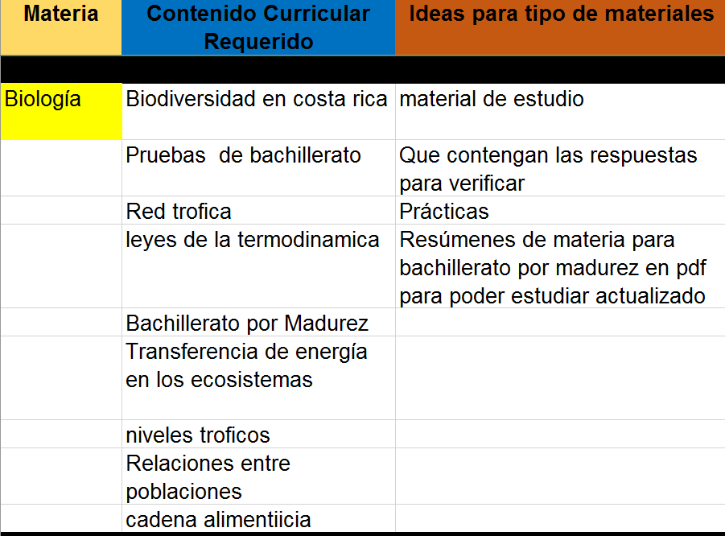

Detalle de encuesta - Educ@tico
Opinión de usuarios
A continuación se muestra el detalle de la opinión de los usuarios que completaron la encuesta. Esta información contempla el resumen de las respuestas repetidas, además, se hace la salvedad que lo textos pueden contener faltas de ortografía ya que se copió la opinión tal y como el usuario lo anotó.
En la siguiente tabla se muestra dos columnas, cada columna es independiente y responde a al criterio del encabezado, su contenido no tienen relación. En caso de querer obtener los datos sin el resumen puede solicitarlo al correo gespro@mep.go.cr con copia a patricia.hernandez.conejo@mep.go.cr. El objetivo de este ejercicio poder otorgar a los asesores de material un insumo para la toma de decisiones de nuevos recursos que se pueden ofrecer a la comunidad en general según esta necesidad.

Detalle actual de Educ@tico
Educ@tico cuenta con 21 recursos que corresponden a la asignatura, el resto son recursos que son genéricos para todas las demás asignaturas.
Recordemos que Educ@tico es el portal oficial de recurso del MEP
Si desea hacer algún recurso para apoyar a la comunidad educativa en general, le compartimos la colección GESPRO, acá podrá ver recursos realizados por el departamento para que tenga una idea de posibles proyectos.
https://recursos.mep.go.cr/2021/coleccion_gespro/